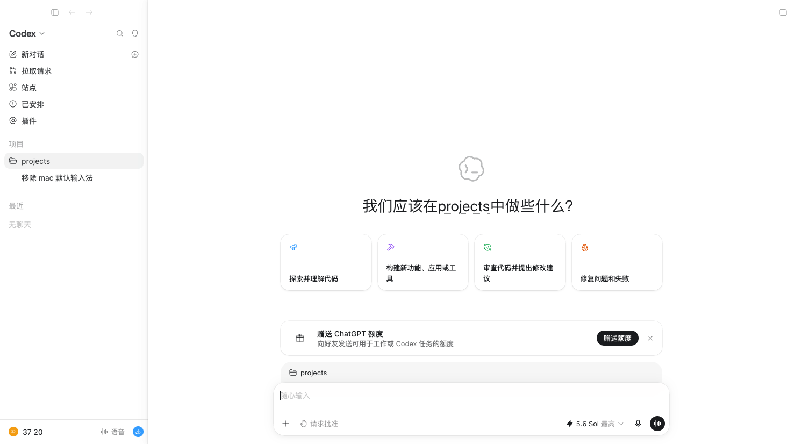
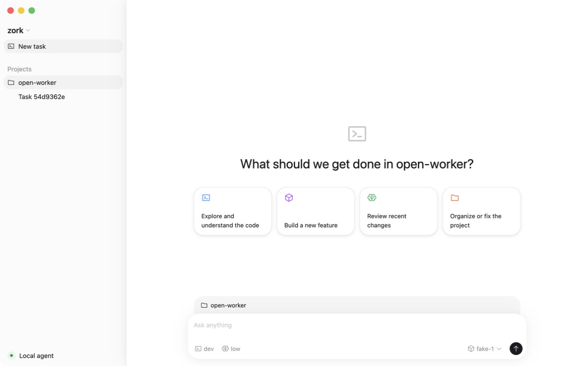
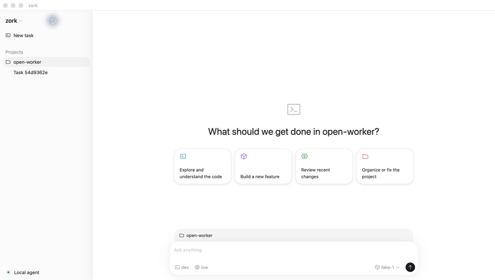
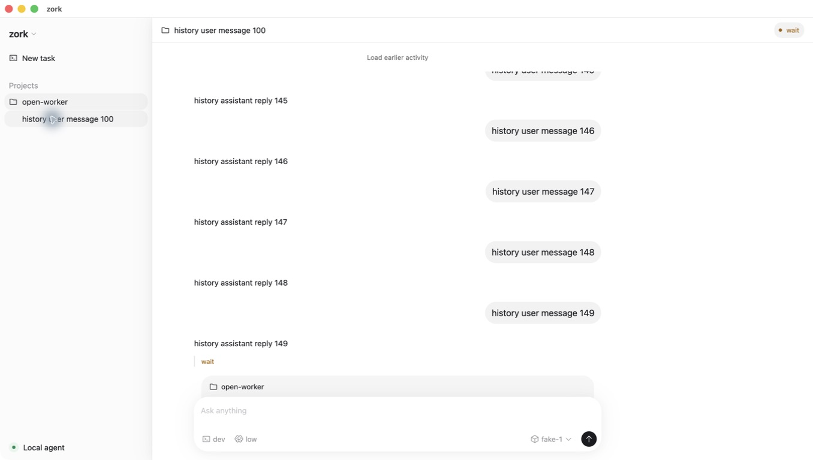

Live Codex on mini2 → native zork-gui
Native chrome first; all screenshots keep their original aspect ratio.


Corrected: the old zork capture had an opaque title row and native title “zork”. The rebuilt app now uses the same full-size, untitled macOS window model as Codex. mini2 denied remote ScreenCaptureKit pixels, so the source side deliberately combines untouched CDP pixels with exact Window Server and packaged-app facts; no controls are fabricated and no permissions were changed.

Matched: 275 px rail, 28/33.6 heading, 710 × 104 suggestion row, bottom composer geometry, selected workspace treatment, and native light shell. Product-only Codex destinations remain intentionally absent.

Matched: 46 px header, 76 px task-column inset, 736 px transcript/composer width, 14/22 assistant prose, 77% prompt bubbles, 20 px bubble radius, and compact task rows. The right-side Codex summary panel is not fabricated.